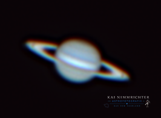

Saturn
Der Herr der Ringe – der wohl beeindruckendste Gasriese unseres Sonnensystems.

Saturn ist der zweitgrößte Planet unseres Sonnensystems und gehört wie Jupiter zu den Gasriesen. Er besteht hauptsächlich aus Wasserstoff und Helium und besitzt keine feste Oberfläche.
Besonders bekannt ist Saturn für sein spektakuläres Ringsystem, das aus Milliarden Eis- und Gesteinsbrocken besteht. Diese Ringe sind einzigartig und machen Saturn zu einem der auffälligsten Himmelsobjekte.
Die Temperaturen auf Saturn sind extrem niedrig und liegen bei etwa −178 °C. Seine Atmosphäre zeigt helle und dunkle Wolkenbänder, die durch starke Winde geformt werden.